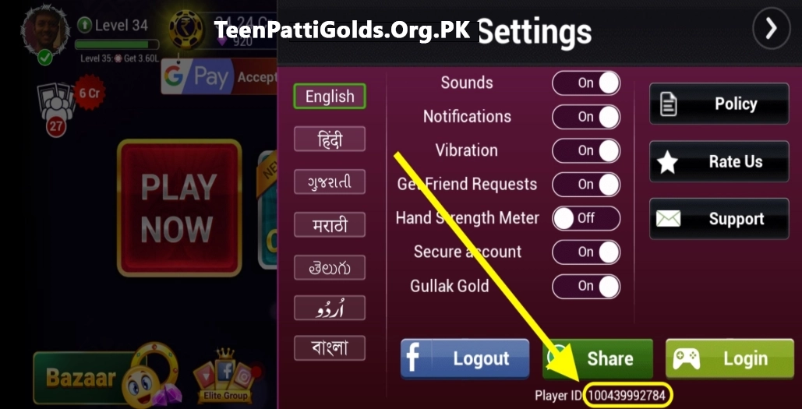

Teen Patti Gold | Teen Patti Gold Game | Teen Patti Gold Pakistan
Teen Patti Gold App | Teen Patti Gold Official Website

Teen Patti Gold App offers coin games, daily bonuses, quick payments, and smooth multiplayer play for card lovers everywhere in Pakistan. This Teen Patti Gold Game is popular among users looking for safe and fast gameplay.
| App Name | 3 Patti Gold |
| Publisher | 3PattiGold |
| Genre | Card Game |
| Version | v1.660 |
| App Size | 46.4 MB |
| Last Updated | 2026 |
| Compatibility | Android 5.0+ |
| Downloads | 30M+ Downloads |
Security Verified
Teen Patti Gold | TeenPattiGold | Teen Patti Gold Original
Teen Patti Gold is an engaging mobile card gaming platform designed to bring fast-paced table action directly to your device. The Teen Patti Gold Game Pakistan edition allows players to experience swift rounds, accessible game rules, and highly responsive table mechanics. You can enter active rooms, compete against real card enthusiasts, and refine your table strategies around the clock with Teen Patti Gold Online.
Newly registered users receive complimentary starting chips upon completing Teen Patti Gold Signup and Teen Patti Gold Register procedures. Built for optimal performance on Android smartphones, the Teen Patti Gold APP has established itself as a preferred destination for card game players across Pakistan.
The software interface is intuitive from the moment you launch the lobby. Both new players and experienced card enthusiasts can navigate options seamlessly. Free starting chips allow users to learn hand rankings and build game strategy without initial pressure. Maintaining focus and disciplined bankroll control remains essential for steady success.
Interactive features such as live chat, social gifts, daily login bonuses, and clear game modes maintain an exciting community environment for users worldwide.
Tips and Tricks to Win at Teen Patti Gold Game
Achieving consistent results on Teen Patti Gold Online requires clear tactical thinking, patience, and controlled decision-making. Keep the following strategies in mind after completing your Teen Patti Gold Login:
- Start Small: Begin with modest table stakes to evaluate round dynamics before increasing bet sizes.
- Master Hand Rankings: Study combination hierarchies thoroughly prior to using Teen Patti Gold Deposit features.
- Utilize Free Chips: Practice game tactics using promotional balances before initiating a real money Teen Patti Gold Recharge.
- Fold Weak Cards Early: Protect your stack by packing weak starting hands instead of chasing unlikely card draws.
- Observe Opponent Patterns: Track betting habits of other players at the table to identify bluffing tendencies.
- Set Daily Limits: Establish clear win and loss limits for every session to ensure disciplined bankroll management.
- Maintain Account Security: Keep your Teen Patti Gold Login credentials secure and never share verification codes.
Key Features of Teen Patti Gold Online | 3 Patti Gold Game
Coin Money Betting – 3 Patti Gold Pakistan
Teen Patti Gold offers structured coin betting options tailored for users in Pakistan. The platform displays real-time pot totals, fast card dealing animations, and transparent action buttons, enabling players to gradually scale their stakes while staying within comfortable limits. You can start with small amounts and move up later. The bet buttons are clear and simple, allowing you to see the pot size before each move. Cards are dealt fast, and results appear quickly. Players can also set spending limits to maintain complete bankroll discipline. This mode teaches patience and timing, helping you learn when to pack and when to stay. Many users enjoy the thrill of real play, where smart choices protect your balance while keeping every round exciting and fair.
High-Stake Tables – 3 Patti Gold
For experienced card players, high-stake rooms provide bigger prize pots and competitive action. These tables require sharp focus, tactical adaptability, and strict stop-loss discipline under high pressure. Skilled players join these rooms to test their strategy. It is wise to watch first, observe betting patterns, and set personal limits. Taking regular breaks helps keep your mind sharp as pressure stays elevated. This mode perfectly fits advanced users who enjoy bold moves while managing risks carefully. Never chase losses; calm, collected play always leads to smarter decisions.
24/7 Customer Support – Teen Patti Gold Support
Dedicated help desks assist players around the clock with Teen Patti Gold Login, Teen Patti Gold Recharge, and withdrawal requests. Support agents handle technical inquiries promptly via live chat and email channels. Whether you need guidance on account recovery, payment verification, or game mechanics, assistance is always available day and night. Keeping your account credentials or relevant transaction screenshots ready helps speed up solutions. Friendly and responsive customer service builds lasting trust while keeping the platform running smoothly for everyone.
Multiplayer Live Tables – Teen Patti Gold APK
Connect instantly with thousands of active players across Pakistan using Teen Patti Gold APK. Live rooms feature real-time interaction, spectator modes, and smooth match loading across supported mobile networks. Games start within seconds as seats fill rapidly. You can observe hands before joining a table to evaluate different playing styles. Integrated chat options add a social element to every session, while performance remains fluid on most smartphones. Players gain valuable experience by reading opponent bets and reactions. You can also mute chat functions for better focus or switch tables whenever you desire a new environment.
Low Minimum Deposit – Teen Patti Gold Deposit
Accessible initial deposit thresholds allow casual users and beginners to explore cash tables without requiring heavy initial capital investment. Small deposit requirements significantly reduce initial risk, giving new users the opportunity to test real-money gameplay, learn hand rankings, and build confidence at their own pace. Students and casual card enthusiasts benefit greatly from this low-entry structure. By starting low and growing balances steadily, players enjoy a safe and pressure-free introduction to real table action.
Multiplayer Group Games
Extra group games bring fast-paced action to active players looking for variety. Tables fill quickly with active community members, and short match durations keep session energy high. Special rooms offer bonus goals, unique scoring rules, and competitive leaderboards that foster friendly rivalry. Group play offers an engaging environment where players learn by observing diverse tactics. Joining during peak hours delivers instant matchmaking, making this feature ideal for users who thrive on high-speed, social card gaming.

Private Tables – Teen Patti Gold New Game
Create custom private lobbies to play exclusively with invited friends. Private table settings let you define custom entry stakes and enjoy practice rounds in a controlled environment. Generating and sharing a simple room code lets you invite specific participants safely. Because external players cannot join, these rooms maintain a calm atmosphere perfect for friendly matches, strategic practice, or casual family games. Private tables give host players full control over the match pace and table limits.
Fair Play System
An advanced Random Number Generator (RNG) ensures completely unscripted card distribution during every single round. No fixed card dealing patterns control match results, guaranteeing equal opportunities for all players at the table. Integrated automated systems continuously monitor games for non-standard behavior, flagging accounts that violate platform guidelines. By prioritizing genuine skill over tricks, this fair play environment rewards patient strategies, careful folding, and calm decision-making.
Anti-Fraud System
Teen Patti Gold utilizes multi-layered security tools to detect and block fraudulent activities. The automated safety engine checks for unusual chip transfers, suspicious gameplay moves, and unauthorized account access. Users can also submit quick reports directly through the in-app interface. By removing dishonest actors promptly, the system keeps table environments clean, safeguarding your account funds and maintaining long-term player trust.
Secure Payments – Teen Patti Gold Recharge & Withdraw
Financial transactions utilize encrypted payment gateways to protect personal billing data. The system supports direct processing via widely used channels such as JazzCash and EasyPaisa, providing clear confirmation details for every transfer. All user details remain protected behind secure encryption protocols. Clear summary pop-ups appear before you finalize any deposit or withdrawal, letting you review details safely. Adding phone locks or PIN protections ensures your digital wallet stays guarded against unauthorized access.
Multiple Game Modes – 3PattiGold | 3 Patti Gold Online
Choose between classic card modes and accelerated fast-paced variations inside 3PattiGold and 3 Patti Gold Online. The platform offers a diverse library of game modes designed to keep every gaming session fresh. Beginners can stick to standard rules to master basic mechanics, while experienced players can explore specialized tables with custom card dealing flows. Smooth one-tap navigation makes switching between modes effortless, allowing you to adapt your gameplay to your current mood and skill level.
Easy Deposits & Withdrawals
Managing your wallet balance on Teen Patti Gold is designed to be straightforward and stress-free. Simply select your preferred payment method, enter the desired transaction amount, and confirm the request to update your account balance quickly. Dedicated history pages log all incoming and outgoing transactions, allowing you to track your spending habits accurately. Transparent processing updates reduce waiting anxiety so you can remain focused on enjoying table action.
Available Games at Teen Patti Gold
Teen Patti Royale: Gold League
Classic Teen Patti follows simple, time-tested three-card rules. Players place their bets, review their cards, or choose to fold (pack) when hands look weak. The player holding the highest-ranking hand at the showdown claims the entire pot. Cards deal swiftly, and individual turns move at a steady pace, allowing new users to master hand hierarchies within minutes. Active tables remain populated throughout the day. Beginners are encouraged to start with lower betting stakes to gradually sharpen their card-reading skills and bankroll management. Integrated table chat enables friendly player interaction, making this mode ideal for both novice card players and seasoned strategists who excel at reading betting patterns and timing their folds.
Open Flash Mode
Flash mode significantly accelerates traditional gameplay by dealing and revealing cards at higher speeds. Players must act rapidly within shortened turn timers or risk forfeiting their hand, creating a high-energy environment that rewards quick instincts. Because rounds conclude much faster than standard matches, Open Flash demands sharp decision-making under time pressure. Players transitioning to this mode should start at lower-stake tables to adjust to the rapid pace before increasing bet sizes. This fast-action format serves as excellent practice for training reflexes, risk assessment, and rapid table adaptation.
Joker Variations
Joker and Hukam modes introduce special wild cards into the deck, dynamically altering hand valuations and outcome possibilities. Wild cards can instantly transform modest card combinations into winning hands, making every deal unpredictable and exciting. While core mechanics remain straightforward, the inclusion of wild elements forces players to adjust their traditional evaluation metrics and watch the table closely. These variations reward flexible tactics and creative play, offering a refreshing twist for users who have mastered classic three-card rules.
AK47 Variation
The AK47 variant elevates specific card ranks—namely Aces, Kings, Fours, and Sevens—into functional power cards or wild values. Players must pay close attention to dealt cards and track discards to evaluate hand strength accurately. Because specific card ranks hold enhanced strategic importance, timing and table observation become central to winning. This tactical game mode appeals to players who enjoy pattern recognition and structured probability thinking, providing an engaging blend of traditional Teen Patti with targeted card tracking.
6 Patti
In 6 Patti, each participant receives six cards instead of three, providing expanded opportunities to construct high-ranking sets and combinations. Having access to a larger pool of cards allows players to analyze multiple combination pathways before declaring their best hand. Pots can grow rapidly as players evaluate competing high-value hands. Beginners should enter low-entry rooms first to familiarize themselves with combination sorting. This mode offers deeper analytical gameplay without adding overly complex rule sets.
Rummy Gold Teen Patti
Rummy shifts the focus toward meld construction, requiring players to draw and discard cards strategically to form valid sets and continuous sequences. Unlike rapid single-round Teen Patti matches, Rummy hands unfold over several turns, favoring deliberate planning and long-term strategy. Success relies heavily on memory, card tracking, and patience as you monitor discarded cards while waiting for key pieces. This game provides a calm, strategy-focused experience for users who prefer tactical card building over fast-paced betting rounds.
Slots
The Slots selection provides instant, reel-spinning action requiring no prior card strategy or deck analysis. Players simply set their wager, initiate a spin, and watch matching symbols align across designated paylines. Featuring fast payout calculations and occasional bonus rounds with special rewards, slot games offer an accessible alternative between intensive card sessions. Starting with conservative bets allows players to enjoy casual, fast-paced entertainment whenever they desire a quick break from table games.
Andar Bahar
Andar Bahar is an intuitive, fast-paced card game where players predict whether a matching card value will land on the 'Andar' (inside) or 'Bahar' (outside) position. Each round resolves quickly as cards are dealt alternately to both sides until a match appears. With easy-to-understand rules and instant outcome reveals, this mode is exceptionally welcoming to first-time visitors. It offers a light, engaging balance to the broader Teen Patti Gold portfolio while encouraging simple probability evaluation and casual bankroll play.
User Interface of Teen Patti Gold
General Home Screen Layout
The Teen Patti Gold home screen features an intuitive and streamlined dashboard layout. Prominent, well-defined tiles allow new players to locate featured game lobbies and start playing without hesitation. Your primary wallet balance remains permanently visible at the top of the interface, making bankroll tracking effortless at any point. Profile configurations, account settings, and message centers are neatly organized in dedicated screen corners to avoid visual clutter. Additionally, promotional banners and event announcements are integrated smoothly into the background, providing helpful updates without obscuring main navigation routes. Brightly colored icons and one-tap menu responses ensure users navigate smoothly between game modes.
Navigation Bar
A persistent bottom navigation bar provides instant access to core system areas, including the main home lobby, digital wallet, active game selection, and customer support channels. Every navigation icon includes a clear textual label for easy identification, ensuring effortless navigation across screen sections. Section transitions execute rapidly with zero processing delay, allowing players to jump between account settings, deposits, and live tables in seconds. Prominent back buttons remain accessible across sub-menus, preventing navigation confusion and ensuring all primary platform tools stay within comfortable thumb reach during active gaming sessions.
Teen Patti Gold Gameplay Table UI
The active table interface is structured for high visibility and seamless single-handed operation. Card assets are rendered in sharp detail with bold suits, making hand evaluation immediate and effortless. Essential action controls—such as call, raise, see, and fold buttons—are positioned along the lower screen area for quick access. Player seats display user avatars, profile handles, and remaining chip stacks clearly around the virtual table. Real-time action timers help players keep track of turn deadlines, while live pot meters update continuously as bets are placed. Side-docked chat panels and smooth card dealing animations keep the focus on the gameplay while providing all necessary information in a unified view.
Visual Style
The visual aesthetics of Teen Patti Gold combine high-contrast color palettes with soft graphical shading, creating a vibrant yet comfortable user experience. Friendly avatar designs and balanced background contrasts minimize eye fatigue during extended playing sessions. Lightweight visual effects and smooth card-dealing transitions enhance table immersion without consuming excess system resources or causing frame rate drops on mobile devices. Large, clean typography ensures table limits, account balances, and action timers remain easy to read across all screen sizes.
Teen Patti Gold Download for Android – Teen Patti Gold For Android
Downloading and setting up the official application on your mobile device is a quick and straightforward process. Follow this step-by-step guide to install the app safely:
- Open your preferred web browser on your smartphone and navigate to the verified download page.
- Locate and tap the prominent Teen Patti Gold APK Download button to initiate the package download.
- Save the installer file directly to your local device storage directory.
- Access your phone's privacy or security settings menu and grant permission to allow installation of applications from unknown sources.
- Navigate to your web browser's downloads manager or open your file manager app to select the newly saved package.
- Tap on the installation package and confirm the permissions prompt to start setting up the application.
- Follow the brief on-screen installation prompts and wait a few moments while the package unpacks.
- Once setup finishes, launch the Teen Patti Gold APP straight from your app drawer to begin playing.
Registration & Teen Patti Gold Login
To gain complete access to online tables, private rooms, and promotional rewards, complete the quick registration process using your active mobile contact number:
- Launch the installed application on your smartphone to display the primary welcome screen.
- Tap the prominent Register button situated on the main landing interface.
- Input your valid primary mobile phone number into the designated account field.
- Request a dynamic One-Time Password (OTP) verification code sent straight to your SMS inbox.
- Type the received numeric OTP into the verification prompt to authenticate ownership.
- Create a robust, unique password to secure your personal account profile.
- Specify a unique in-game display nickname or alias for table interactions.
- Grant standard basic system permissions required for smooth application performance.
- Select Teen Patti Gold Login to enter the lobby and finalize your setup.
Payment System – Teen Patti Gold Pakistan Payments
JazzCash & EasyPaisa – Teen Patti Gold Deposit
Widely favored across Pakistan, mobile wallets like JazzCash, EasyPaisa, and integrated digital payment gateways enable fast, secure, and convenient in-app deposits. Users simply input their registered mobile wallet account number, specify the desired recharge amount, and confirm the authorization prompt. Playable funds reflect in your in-game wallet within moments of transaction completion. Automated digital receipts appear directly on screen for clear accounting and personal transaction tracking. Because these localized mobile wallet channels operate seamlessly across Android devices without requiring credit or debit cards, they remain a top choice for players. New users can take advantage of low deposit limits to test real-money features safely while enjoying instant wallet updates.
Bank Transfers
Bank transfers serve as a reliable financial option for players who prefer conducting direct account-to-account transactions. Fully integrated with major local banking institutions, this method allows users to link their account details securely once and save them for future use. After selecting your target deposit or withdrawal figure, you submit the request directly through the banking gateway. While bank transfers may require slightly longer processing times compared to instant mobile wallets, they provide enhanced transaction limits and clear institutional audit trails, making them ideal for managing larger balances securely.
Deposit Process – Teen Patti Gold Deposit
Adding funds to your in-game digital wallet is secure and instant. Complete your balance top-up by executing the following operational steps:
- Navigate to the top menu bar or lobby dashboard and tap the Wallet / Deposit icon.
- Select your preferred payment channel from supported digital options like JazzCash or EasyPaisa.
- Choose a pre-set deposit package or manually enter your desired custom recharge amount.
- Review and confirm your account transfer details on the payment summary screen.
- Authorize the payment request on your mobile device using your account PIN or security prompt.
- Wait briefly for the automated processing gateway to verify the financial transfer.
- Check your in-app wallet balance to confirm that your playable credits have updated.
- Save or screenshot your transaction receipt for personal records and return to the game lobby.
Withdrawals – Teen Patti Gold Withdraw
Cash out your winnings quickly and safely directly to your preferred mobile account. Follow this guide to process a smooth cashout request:
- Open the digital wallet section directly from the main game dashboard.
- Select the Teen Patti Gold Withdraw option to open the payout interface.
- Type in the exact chip or coin amount you wish to convert and cash out.
- Select your preferred payout account provider, such as JazzCash or EasyPaisa.
- Input your verified mobile account title and registered phone number carefully.
- Recheck all payment information for accuracy and submit your withdrawal request.
- Wait for the automated backend system to process and approve your payout application.
- Monitor transfer updates and check real-time request status inside your wallet history tab.
Bonuses & Rewards – Teen Patti Gold Latest Version
The updated application release includes an array of promotional chip distributions designed to keep your playing balance healthy across every gaming session:
- Welcome Bonus: Free chip package granted automatically to newly registered profiles to kickstart risk-free practice matches.
- Daily Login Bonus: Progressive promotional rewards credited to your wallet each consecutive day you open the application.
- Weekly Bonus: Substantial extra chip distributions rewarded to active community members completing weekly table milestones.
- Hourly Free Chips: Recurring balance top-ups claimable at timed hourly intervals throughout the day with a simple tap.
- Referral Bonus: Lucrative commission chips earned by inviting real friends to register and play using your personal invite link.
Welcome Bonus
New users receive a complimentary allocation of free chips immediately upon successfully activating their account. This introductory welcome grant allows beginners to explore table mechanics and game variations without initial financial pressure. Claimable once per user profile, the bonus credits directly to your digital wallet within seconds of sign-up. Utilizing these starting chips on low-entry tables serves as an ideal risk-free environment to understand hand rankings, observe betting behaviors, and build card-playing confidence before committing personal funds.
Daily Login Bonus
By launching the Teen Patti Gold application daily, players can collect recurring chip rewards that increase in value across consecutive days. Simply opening the app and collecting your daily reward helps steadily grow your chip balance over time, even without extended playing sessions. Establishing a consistent daily login routine ensures you accumulate substantial promotional balances, allowing casual users to stay active and enjoy regular table rounds without making frequent deposits.
Weekly Bonus
The Weekly Bonus rewards committed players who maintain consistent table activity throughout the week. Granted after meeting simple gameplay milestones over a seven-day period, these weekly payouts provide a larger chip boost compared to standard daily rewards. This feature serves as an excellent buffer to replenish your wallet after intense gaming sessions, offering additional resources to support longer matches and higher-tier table participation. Players can easily track their progress toward unlocking the weekly grant via the in-app rewards tab.
Hourly Free Chips
Teen Patti Gold offers frequent wallet top-ups through an automated hourly free chip distribution timer. Once the countdown expires, players can tap a single button to collect a fresh batch of promotional chips. These periodic refills are ideal for quick gaming sessions during short breaks, helping maintain active gameplay when your primary balance runs low. Utilizing hourly chips wisely allows users to keep playing without needing to recharge immediately.
Teen Patti Gold Level-Up Rewards
As you participate in matches and complete hands, your account accumulates experience points that increase your player profile level. Achieving each new level milestone unlocks tiered chip packages, exclusive perks, and decorative profile status badges. This progression system incentivizes strategic play and continuous improvement, providing supplementary chip rewards that support ongoing gameplay as you advance toward higher-stakes tables.
Referral Bonus
The referral program allows players to earn substantial chip commissions by inviting friends to join the platform. By sharing a unique invite link or registration code, both you and your referred friend receive promotional chip bonuses upon their account creation and initial table activity. Inviting real gaming enthusiasts enhances your social network on the platform while generating a steady stream of bonus chips to fuel your ongoing card sessions.
Pros & Cons – Teen Patti Gold Old Version vs New
Pros
- Straightforward rules and intuitive user interface.
- Fast transaction processing for local payment methods.
- Wide variety of card game modes and stakes.
- Multiple free daily chip collection mechanisms.
Cons
- Involves real-money risk requiring careful self-regulation.
- Requires a consistent and stable internet connection.
- High-stake tables carry elevated financial risk for unpracticed users.
User Feedback & Conclusion – Teen Patti Gold Official Website
User Reviews:
Players in Pakistan highlight the application's clean design, active table matchmaking, and smooth wallet
integrations. Users consistently appreciate accessible practice modes and efficient customer response times
during account inquiries.
Conclusion:
Teen Patti Gold delivers a versatile digital platform for mobile card game enthusiasts, combining robust
multiplayer lobbies, reliable software security, and streamlined payment options. Whether accessing the
platform
on Android or PC, maintaining responsible gaming practices and balanced bankroll management ensures an
enjoyable
table experience.
Frequently Asked Questions
Teen Patti Gold is an Android-focused card gaming application based around Teen Patti-style gameplay. Depending on the version, it may provide different game modes and mobile gaming features.
You can download Teen Patti Gold by obtaining the installation APK file from a trusted online platform or official app source. Ensure your Android device allows installations from verified external sources before launching the installer file.
Yes, Teen Patti Gold is completely free to download and install on compatible Android devices. Players can access standard tables and explore basic gameplay features without paying an upfront download fee.
Yes, most builds of Teen Patti Gold include online multiplayer features that let you invite friends, create private gaming tables, or join live multiplayer rooms with players worldwide.